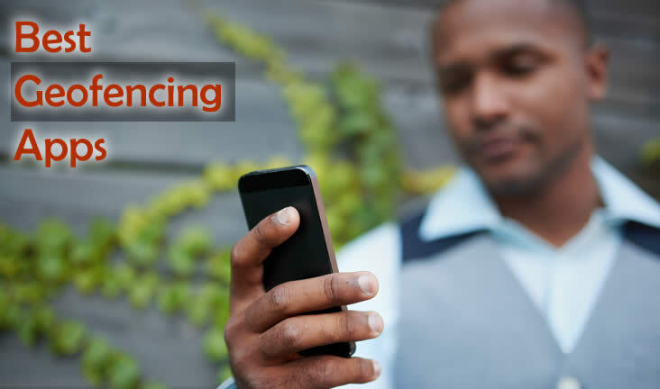

The 10 Best Geofencing Apps to Use in 2024 | Track Phone Locations with Mobile Spy Apps

Edited by
Eric Czerwonka

The best geofencing apps allow you to set up restricted zones and monitor your kid’s/partner’s/device’s location and see where they are in both real-time and historically! Alongside geofencing, phone tracking apps allow you to see a device’s location history, phone calls, messages, and browsing history. In this article, we review the best geofencing apps, covering features, pros & cons, and pricing to help you make an informed decision.
If you’re after a quick answer, our top pick for the best geofencing app is mSpy, thanks to its location tracking, unlimited safe and restricted zones, and real-time notifications. Keep reading to see how providers like eyeZy, Cocospy, and Spyic compare.
After checking out dozens of mobile tracking apps and putting their geofencing capabilities to the test, we’ve put together the following list of the ten best geofencing apps in 2024:
Before buying a geofencing phone app, there are quite a few variables you need to consider, such as the app’s tracking capabilities, compatibility with different devices, and other tracking and monitoring features you’ll have access to with your subscription.
Here are in-depth reviews of the best geofencing apps, so you can easily compare them and choose the one that’s best for you.
Buddy Punch significantly enhances workforce management through its robust geofencing capabilities. Geofencing allows employers to set virtual boundaries around specific work locations using GPS technology. With Buddy Punch, this means employees can only clock in or out when they are physically within these designated areas. This feature ensures that time entries are accurate and that employees are where they are supposed to be during their working hours, reducing time theft and increasing overall accountability.
The software's geofencing is highly customizable and user-friendly. Employers can easily create multiple geofenced zones by entering addresses or pinpointing locations on a map within the platform. This is particularly beneficial for businesses with multiple job sites or mobile workforces. Buddy Punch then uses real-time GPS data from employees' devices to verify their location upon clocking in or out, seamlessly integrating this information into the time tracking system.
Moreover, Buddy Punch's geofencing feature works hand-in-hand with its scheduling and reporting tools. Managers receive instant notifications if an employee attempts to punch in or out outside of the approved areas, allowing for prompt corrective action. Detailed reports can be generated to analyze attendance patterns and ensure compliance with labor regulations. This comprehensive approach streamlines operations and contributes to more accurate payroll processing.
eyeZy is an excellent phone monitoring app with powerful features that make location tracking and phone monitoring simple and easy. You can use eyeZy to see the full location history of the device, along with the exact coordinates, addresses, and the time of each visit.
The feature that makes eyeZy stand out from other phone tracking apps is its Magic Alerts. You can take the time to set up allowed and restricted zones on the map, as well as filters for SMS, social media chats, and online searches. Whenever your child is going somewhere they shouldn’t, or talking about inappropriate topics with their friends, eyeZy will let you know instantly.
With eyeZy, you don’t have to monitor your kid’s phone 24/7, but you’ll still know exactly when they’re up to no good. The best part about eyeZy is that you can take full remote control over the device and block their internet connection, prevent them from accessing certain apps, or even restrict their access to certain websites.
eyeZy also lets you record your child’s screen, so you can see exactly what content they interact with, who they’re texting, and what files they’re sharing with their friends and strangers on the internet.
uMobix takes a unique approach to mobile phone location tracking. Rather than simply providing you with a list of visited locations, uMobix shows you the exact paths the device takes from one location to another, allowing you to see your child’s travel patterns. This is extremely useful for determining whether they’re taking the usual routes or using detours and going out of their way to visit certain places and areas.
That said, uMobix doesn’t have geofencing capabilities. While you can review the device’s full location history, you won’t be able to track your child in real-time or rely on the app to notify you when they enter or leave a certain area. In other words, you’d have to monitor their phone constantly, and even then, you’ll only be able to see their location once they arrive at their destination.
uMobix has a plethora of other useful monitoring features, including the ability to see all phone calls, SMS messages, and social media chats on the target device. Still, if you’re primarily interested in geofencing, we suggest choosing a different phone tracking app from our list.
Cocospy is a decent all-around phone monitoring app with powerful, precise GPS location tracking features. You can use Cocospy to monitor the device’s exact location in real time, review the location history (including date stamps and precise coordinates), and set up geofencing alerts.
In addition to geofencing, Cocospy lets you monitor your child’s activity on all popular social media platforms and instant messaging apps, as well as see exactly what they’re searching for online. You’ll also be able to access all call logs, shared media, photos, and videos on the device.
Another powerful feature of Cocospy is the ability to detect SIM card changes. If your child loses a phone or has the device stolen, Cocospy will notify you if a third party replaces the phone’s SIM card. It will also help you triangulate the device’s location, so you can continue tracking the phone and recover the device.
Spyic leverages both the phone’s GPS location and Wi-Fi data to determine the device’s exact position. As long as your child has the location turned on or is connected to any public Wi-Fi in the city, you’ll be able to see exactly where they are.
You can also use Spyic to review the device’s location history, as well as track your kid’s movements in real time with timestamps. You’ll have access to a full list of addresses they visited, including the exact geographic coordinates and location marked on the map.
Spyic also lets you set up virtual geographic boundaries and notifies you the moment your child steps out of the allowed zone or enters a restricted area on the map – so you can react instantaneously.
In addition to location tracking and geofencing, Spyic offers superb phone call and message monitoring, allows you to see their activity on social media, and lets you review your child’s complete browsing history.
Hoverwatch is an all-around solid phone monitoring app, but it doesn’t bring anything new to the table regarding location tracking. It lets you see the location history and the travel pattern on the device, but it doesn’t support geofencing or real-time location monitoring.
This is a major drawback, especially considering that Hoverwatch is slightly more expensive than the leading alternatives like mSpy and Eyezy.
While not the best option for geofencing, Hoverwatch truly shines when it comes to phone call recording, allowing you to listen to every phone call made to and from the device. Another reason to opt for Hoverwatch is the fact that it takes frequent screenshots, giving you invaluable insights into your child’s phone activity.
XNSpy prides itself on providing “specific location monitoring” that allows you to set up safe and restricted zones and keep an eye on specific locations. You can create an unlimited number of zones on the map, as well as mark different locations within these zones that you wish to monitor. The app will notify you whenever the device enters and leaves a particular zone/location, so you’ll know exactly where your child is at all times.
With XNSpy, you’ll also have access to a comprehensive checklist of all visited locations, exact coordinates and timestamps attributed to each location, and a clear map overview with each location pinned.
In addition to location tracking, XNSpy offers a myriad of useful monitoring features, including phone call and SMS monitoring, social media activity tracking, a screen recorder, application control, and remote commands.
Qustodio is the best choice if you want to track the location of multiple family members. With a single subscription, you can monitor and track up to ten devices, see their location in real time, and view all addresses they visited in the past seven days.
Every monitored device is depicted by a different animal icon on the map, making it easy to tell where different people are on the map at a glance. The app also includes geofencing, allowing you to set up restricted zones on the map, which are shared between all the different devices.
Another thing we love about Qustodio is the fact that it provides you with detailed daily, weekly, and monthly reports of your children’s online activity. This means you’ll know exactly what they’re searching for online and what content they interact with, while not having to monitor their phones 24/7.
iKeyMonitor offers dedicated geofencing apps for iPhone and Android, as well as parental control apps for Windows and macOS. In other words, you can use iKeyMonitor to track your children’s location in real time, as well as ensure they don’t access any inappropriate or dangerous content on their PCs or laptops.
When it comes to phone GPS tracking, iKeyMonitor allows you to customize the GPS location update frequency, see exact coordinates and timestamps of all locations visited, and set up geographic boundaries through geofencing.
What’s interesting about iKeyMonitor is that you’ll receive location alerts via email, meaning you can review your kid’s location on any device — be it your phone, tablet, laptop, or PC — by using your iKeyMonitor credentials to log into the dashboard.
In addition to superb geofencing capabilities, iKeyMonitor gives you complete remote control of the target device and lets you see all phone calls, messages, and social media chat logs, as well as their full browsing history.
TheOneSpy has excellent location tracking capabilities, allowing you to monitor the device’s exact location in real time, using live GPS tracking. You can also use it to set up safe and restricted zones on the map and get real-time alerts whenever the device crosses one of the virtual boundaries you created on the map.
The one gripe we have with TheOneSpy comes from the fact that fences and locations are really difficult to see. When you select a particular location, the app opens the map in a small overlay window rather than opening the map in full-screen or on a different tab. This can be frustrating, especially if you’re trying to discern your child’s location on a smaller screen (e.g., your phone).
If TheOneSpy developers rework the app’s UI, it will be a serious contender for the best geofencing app, but until then, we strongly suggest one of the more optimized alternatives like mSpy and eyeZy.
Geofencing refers to the feature of phone tracking software, which enables you to create artificial, virtual boundaries on the map. When a monitored device enters or leaves an area you set up on the map, you will instantly get a notification. This enables you to keep tabs on your children without having to monitor their device’s location 24/7.
Geofencing software leverages the global positioning system (GPS) to monitor the device’s location in real time. By triangulating the coordinates of the device, a geofencing app will detect whenever the phone enters or leaves a particular area on the map and will notify you so you can take appropriate action (e.g., call your child and inquire about where they’re going).
If you’re looking for free geofencing apps, you’ll be disappointed to learn that there are virtually no phone tracking applications with advanced geofencing capabilities that are completely free. The closest thing you’ll get to a free geofencing app is a free trial, but even then, most phone trackers limit the use of GPS location features.
If you want a reliable phone tracking app with accurate GPS tracking, geofencing, and real-time alerts, your best bet is to opt for a premium plan from one of the best geofencing apps on our list, like mSpy, eyeZy, or Cocospy.
Here’s a step-by-step guide for using mSpy — the best geofencing app in 2024 — to set up geofencing and start tracking your children’s location in real time today.
Navigate to mSpy’s official website and click the “Try Now” button.
Before you can finish creating your account, you have to choose a payment plan. You’ll have the option between one month, three months, or twelve months. If you opt for the yearly plan, you’ll save $60 on your subscription!
Open the email you provided during account creation and find the message from the mSpy team.
Click the link provided in the email to download the mSpy app on the target device. Follow the simple prompts on the screen and provide mSpy with all the necessary permissions.
Use the login credentials provided in the email to log into the mSpy dashboard.
From the mSpy dashboard, navigate to the Geofencing tab on the left-hand side. Choose between Allowed and Restricted zones, click the + button, and select the area on the map.
That’s all there is to it — geofencing and GPS location tracking is that simple with mSpy!
Keep in mind that you can add multiple allowed and restricted zones. You’ll receive a notification the moment the monitored device enters or leaves any of these zones.
If you purchase a premium subscription to the best geofencing apps like mSpy or eyeZy, you can set up geofencing yourself by creating safe and restricted areas on the map.
Geofencing relies on GPS to triangulate the monitored device’s exact location. It works the same way as GPS works in your car or on your phone when you’re trying to find a new restaurant using Google Maps. In short, it absolutely works.
After testing dozens of geofencing apps, our number one pick for the best geofencing app is mSpy. It has laser-targeted location tracking, allows you to set up unlimited safe and restricted zones, and it instantly notifies you when the device enters or leaves any of the zones you set up on the map.
It’s possible to track someone’s phone without physical access to their device, but only if they’re using an iPhone that’s connected to iCloud. Even then, you’d need their iCloud login credentials in order to use the phone tracking app to access their device information.
One thing to keep in mind is that you can only legally monitor your children’s devices, provided that they are minors and are using a phone that’s registered in your name. If you want to monitor the device of your partner, spouse, employees, or anyone else, you will first have to obtain their informed consent.
When it comes to choosing the best geofencing iPhone app or finding the best geofencing Android apps, the most important thing to consider is how accurate the app is and whether or not it provides real-time location updates.
Most of the apps we recommend in this article allow you to set up safe and restricted zones and view the complete location history. However, geofencing and location tracking is just a single feature the leading phone tracking apps provide.
Since you’ll be paying upwards of $10/month regardless of what geofencing app you opt for, we strongly recommend comparing their other functionalities as well, such as phone call and SMS monitoring, app blocking, and the ability to view the device’s internet history.
Despite the tough competition, mSpy has earned our number-one spot as the best geofencing app for 2024. It offers dedicated geofencing apps for iOS and Android that are simple and easy to use, and it provides laser-targeted location tracking, full device location history, smart geofencing, and real-time notifications.
Take advantage of mSpy’s yearly plan to save $60 and start tracking your children’s phone locations today with the most powerful geofencing app in 2024.
| Buddy Punch | eyeZy | uMobix | Cocospy | Spyic | Hoverwatch | XNSpy | Qustodio | iKeyMonitor | TheOneSpy | |
|---|---|---|---|---|---|---|---|---|---|---|
| Cheapest Renewal Price | $3.99 per user + $19 base fee per month when paid annually | $10.00/month on a yearly plan | $12.49/month on a yearly plan | $12.49/month on a yearly plan | $9.99/month on a yearly plan | $12.49 month on a yearly plan | From $9.99/month | From $8.08/month on a yearly plan | From $16.99/month per device for phones From $29.99/month per device for laptops and desktop PCs |
From $10.00/month on a yearly plan |
| Supported Operating Systems | All iOS and Androids devices | iPhones running iOS 7 – 13+ without Jailbreak All iOS versions with Jailbreak |
All iOS and Androids devices | Android 4.0 All iOS devices connected to iCloud |
Android 4.0 or higher All iOS devices |
Android 4.0 and higher All iOS devices |
Android 4 up to 11 iOS 6 up to 9.0.2 |
Android 6.0 and higher iOS 11 and higher |
iOS 9.0 and higher with Jailbreak Android 2.3 and higher |
Android 5.0 and higher All jailbroken iPhones and iPads |
| Number of devices supported | Unlimited | 1 | 1 | 1 | 3 | 1 | 1 | 10 | 1 | 1 |
| Free Plan/Trial | 14 day free trial, no credit card required | Demo | Demo | Demo | Demo | Demo | Demo | Free plan available, but without location tracking | Free trial available | Demo |
| Refund/Guarantee | No refunds after trial expires | 14 days | 14 days | 14 days | 60 days | 14 days | 30 days | 30 days | 30 days | 30 days, but will only refund 50% of the amount paid |